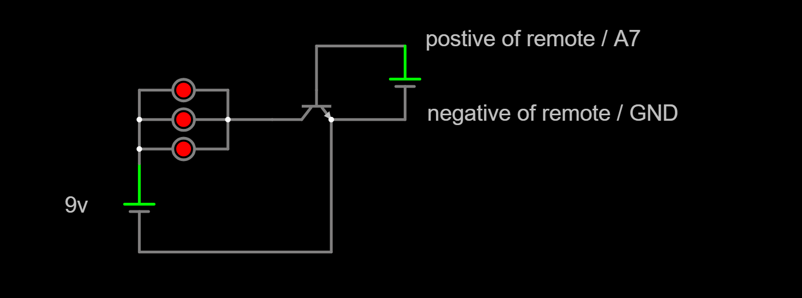
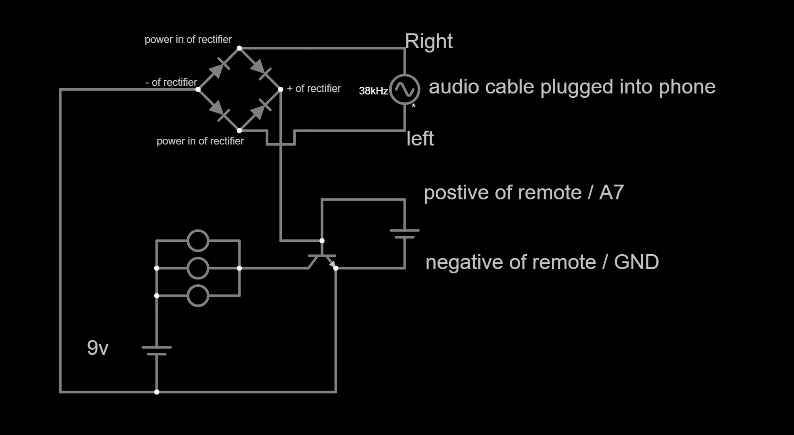

The problem was simple: my LED strip remote is weak. From my bed, I'd have to hold it at exactly the right angle to get it to respond, and half the time it just wouldn't work at all. Over Christmas break I had some free time and components lying around, so I decided to fix it properly instead of just dealing with it.
The solution was an IR blaster, a circuit that takes the signal from my existing remote and uses a transistor and a 9V battery to drive three IR LEDs at once instead of one, making the signal significantly stronger. Later I added a second feature: a phone input through the headphone jack, so I can use an app to send custom IR codes straight from my phone without needing the remote at all. I also published the build on Instructables for anyone who wants to make their own.
Why a Transistor?
A standard LED remote outputs a weak IR signal, just enough to control a receiver a few feet away under ideal conditions. The idea behind the blaster is to use that signal not as the power source for the LEDs, but as a control signal. The remote's output goes into the base of an NPN transistor, which acts as a switch. When the remote fires, the transistor opens and lets the 9V battery drive the LEDs directly, much more power, much stronger signal.
Building the Base Circuit

The core build is pretty straightforward. I put three IR LEDs in parallel and connected the positive leads to a 9V battery. The negative leads go to the collector of the NPN transistor (I used a 2N2222, but basically any NPN will work). The signal wire from the remote goes to the base, and the ground from both the remote and the battery connect to the emitter.
- 3x IR LEDs wired in parallel → 9V battery positive
- LED negatives → transistor collector
- Remote signal wire → transistor base
- Remote GND + battery negative → transistor emitter
I actually built two of these circuits with the bases and emitters linked together, giving me six LEDs total for even more range. If you want to go that far, it's just doubling the circuit and tying the control pins together.
Adding Phone Support

After the base circuit was working I wanted to go further, instead of always needing the physical remote, I wanted to be able to send IR codes directly from my phone. It turns out you can do this through the headphone jack using an app that encodes IR signals as audio.
The catch is that audio output is AC and the transistor needs a DC control signal, so I added a rectifier made from four 1N4148 switching diodes arranged in a diamond (bridge rectifier) formation. The left and right audio wires from the cable feed into the power inputs of the rectifier, and the DC output connects to the base and emitter of the transistor from the first step. The app outputs the same signal on both left and right channels so it doesn't matter which side is which.
- Audio cable left + right → rectifier input
- Rectifier positive output → transistor base
- Rectifier negative output → transistor emitter
I also ran a pair of wires out from the base and emitter so I can plug in other signal sources, an Arduino or Raspberry Pi, for example, without having to take the circuit apart. The app I used is IR Plus Wave on Android. I have no idea if there's an equivalent for iPhone.
The Result
It works exactly how I wanted. From anywhere in my room I can hit the remote once and the LEDs respond instantly, no more awkward angles. And with the phone input I can send custom IR codes I've looked up or recorded, which opens up control over basically any IR device in the room, not just the LED strip.
It's a small project but a satisfying one. Sometimes the best motivation to build something is just being annoyed enough by a problem that fixing it is easier than living with it.